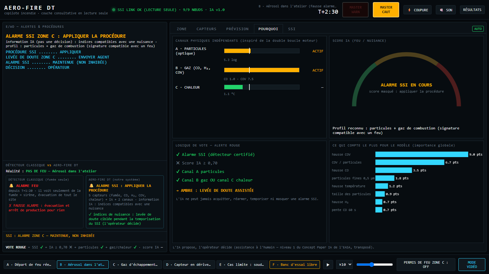

FICHIER RÉCAPITULATIF
PRÉDICTION · PRÉVENTION · PROTECTION
Le copilote incendie qui lit l'alarme d'une usine sans jamais la toucher, et qui dit au gardien : vrai feu ou fausse alarme ? que faire ?
L'alarme des usines ne voit que la fumée : elle ne fait pas la différence entre un spray et un feu. Au Royaume-Uni, 39 % des sorties des pompiers sont des fausses alarmes. En Tunisie, les indemnités incendie ont atteint 47,9 MDT au 1er semestre 2026.
Nos clients : les usines et entrepôts qui ont déjà une alarme incendie (4 519 entreprises industrielles), d'abord les sites classés à risque.
Dans les soutes d'avion, il y avait 200 fausses alarmes pour 1 vrai feu. L'aviation a réglé ça avec deux boucles de détection qui doivent être d'accord. Nous faisons pareil :
Un spray, de la poussière ou un échappement n'ont pas cette « empreinte » : ils ne sont jamais appelés « feu ».
| Méthode de l'aviation | Dans Aero-Fire DT |
|---|---|
| Détection moteur à double boucle | « Feu » seulement si 2 signes physiques différents sont d'accord |
| CS / 14 CFR 25.858 (détection en soute) | objectif : alerte au gardien en moins de 60 s, chaque voie de détection testable |
| FAA AC 25-9A (essais de fumée) | essais avec sources de fumée et pires cas → scénarios rejoués et banc d'essai libre |
| ARP4761A (analyse de sécurité) | analyse des dangers et arbre de défaillances : l'IA ne peut jamais couper l'alarme |
| ECAM d'Airbus (écran cockpit) | écran sombre quand tout va bien, 3 niveaux d'alerte, procédure affichée |
| EASA, IA niveau 1 | l'IA assiste, l'humain décide |
| CFD (simulation des flux d'air) | la fumée simulée en 3D dans le hall |
Méthodes « inspirées de » : aucune certification aéronautique n'est revendiquée. L'alarme certifiée du site reste la barrière de sécurité.
Données réelles publiques : 32 essais de feu et de fausses alarmes enregistrés dans un hall industriel (Mendeley, Allemagne). Chaque essai est jugé par une IA qui ne l'a jamais vu.


app/index.html. Pas d'installation, pas d'Internet.Chaque usine a son modèle : le jour 1, un modèle général ; puis, pendant un pilote de 90 jours, le gardien confirme chaque alerte et l'IA apprend son usine.
| Pièce | Ce qu'elle mesure |
|---|---|
| Sensirion SPS30 | fumée + taille des particules |
| Sensirion SGP30 | hydrogène + vapeurs (COV) |
| Sensirion SCD40 | CO₂ + température + humidité |
| Winsen ZE07-CO | monoxyde de carbone |
| ESP32-C3 | calcule le score IA et l'envoie par radio |
≈ 300–475 TND par boîtier rendu en Tunisie · 0,68 W · passerelle Raspberry Pi · pas de caméra.
| Offre | Mise en service | Abonnement |
|---|---|---|
| A · PME | 7 000 TND | 450 TND / mois |
| B · sites classés | 22 000 TND | 1 200 TND / mois |
| C · grands comptes | 45 000 TND | 3 000 TND / mois |
| Livrable | Fichier |
|---|---|
| Fichier récapitulatif | 01_Fichier_Recapitulatif (ce document) |
| Présentation | 02_Presentation_Pitch |
| BMC · carte d'empathie · compte rendu d'équipe | 03_BMC · 04_Carte_Empathie · 05_Compte_Rendu_Equipe |
| Rapport du modèle IA | 06_Rapport_Modele_IA |
| Vidéo explicative (1 min) | 07_Video_Explicative_Aero-Fire-DT.mp4 |
| Dépôt GitHub (code, données, tests, application) | github.com/AhmedHammouda5000/aero-fire-dt |